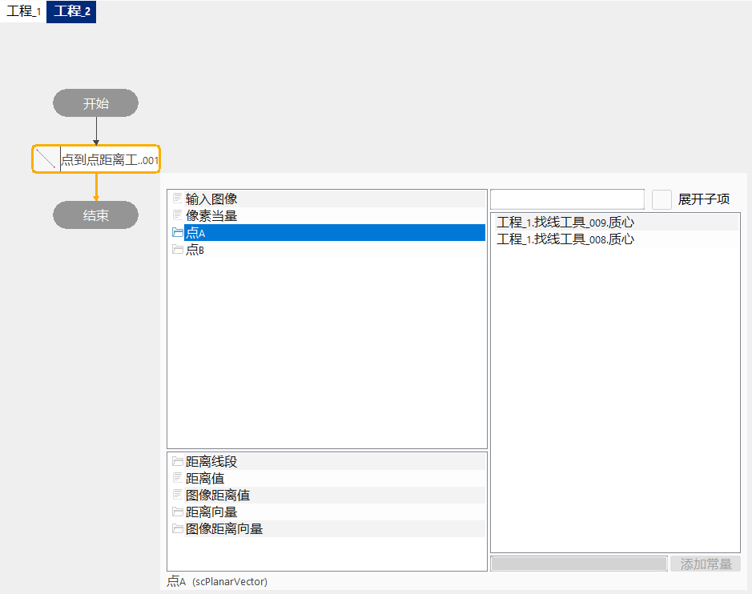

数据链，为流程图各工具间的数据链接，用于工具与工具、工具与变量之间的数据传递。
选择参数：在输入参数中选中某一参数，如上图中的“输入图像”，右边的“输入数据备选项”列表中将列出与当前选中参数类型相匹配的所有参数。参数的来源有工具参数、变量、常量几种。
添加参数链接：在输入数据备选项中选中相应参数后，双击鼠标即完成链接。链接的参数会自动添加到输入参数列表中相应参数后以–>显示。
删除参数链接：选中待删除的参数链，在右键弹出的菜单中点击“删除”即可。
筛选功能：当参数来源较多时，可使用编辑框进行筛选，如图所示：
筛选前
筛选后
链接规则说明：为了数据流的正确传递，不造成时序混乱，数据链接做了如下的限定，不符合约束条件的数据将不会出现在备选参数中。
顺序流程，工具允许链接上方工具的参数
分支流程，工具允许链接上方工具和其它分支工具的参数
并行流程，工具允许链接上方工具参数，不允许链接其它分支的参数
循环流程，工具允许链接上方工具参数

全局参数功能：如果需要跨工程传递参数，则需要使用全局参数功能（跨工程传递变量，使用全局变量即可）。
制作一个全局参数：打开数据链编辑，在输出参数中右键需要作为全局参数的参数，点击“公开为全局参数”即可。若需要取消该参数的全局参数功能，同样右键该参数，点击“取消公开”即可。
公开为全局参数
取消公开

链接全局参数：在另一个工程中，如果需要用到上图中的全局参数“测量终点”，双击需要使用该参数的工具，在输入数据备选项中查找到该参数后双击添加即可。

子参数扩展功能：如果遇到工具的参数无法被其他工具直接使用，需要解析、生成等中间转换过程的情况时，可使用子参数扩展功能。
扩展子参数：打开数据链编辑，右键需要扩展子参数的参数，若弹出菜单中包含“展开子项”，则该参数支持子参数扩展，只需单击选中展开子项中
需要扩展的子参数即可，该参数会自动添加到参数列表中；若弹出菜单中没有“展开子项”，则该参数不支持子参数扩展。
链接子参数：添加到参数列表中的子参数使用方法与其他参数一致。
删除子参数：打开数据链编辑，右键需要删除的子参数，点击弹出菜单中的“删除子项”即可，该参数会从参数列表中移除。

| 参数类型 | 参数说明 | 子参数名称 | 子参数类型 | 子参数说明 |
|---|---|---|---|---|
| scLineSegment | 线段 | P1 | scPlanarVector | 线段端点 |
| P2 | scPlanarVector | 线段端点 | ||
| GcCoordPos | 位置姿态 | PosX | double | 位置X坐标 |
| PosY | double | 位置Y坐标 | ||
| PosD | double | 位置角度 | ||
| GcPlatformAxisDirection | 轴方向 | DirX | bool | X轴方向 |
| DirY | bool | Y轴方向 | ||
| DirD | bool | D轴方向 | ||
| scSquareMatrix2X2 | 二阶矩阵 | M00 | double | 0行0列数值 |
| M01 | double | 0行1列数值 | ||
| M10 | double | 1行0列数值 | ||
| M11 | double | 1行1列数值 | ||
| scCircle | 圆 | Center | scPlanarVector | 圆心 |
| Radius | double | 半径 | ||
| scCircularArc | 圆弧 | Circle | scCircle | 圆弧所在圆 |
| StartPhi | scRadian | 起始角（弧度） | ||
| SpanPhi | scRadian | 中止角（弧度） | ||
| scEllipse | 椭圆 | Center | scPlanarVector | 椭圆中心 |
| Radii | scPlanarVector | 长轴和短轴长度 | ||
| Rotation | scRadian | 旋转角度（弧度） | ||
| scGeomSearchResult | 几何定位结果 | t2XFormLinear | sc2XformLinear | 二维线性变换 |
| MatchRegion | scAffineRectangular | 匹配区域 | ||
| MatchPoint | scPlanarVector | 匹配点 | ||
| Score | double | 分数 | ||
| scLine | 直线 | Dir | scPlanarVector | 直线方向向量 |
| Pos | scPlanarVector | 直线经过的点 | ||
| scRectangular | 矩形 | UpLeft | scPlanarVector | 矩形左上点 |
| Size | scPlanarVector | 矩形尺寸 | ||
| scAffineRectangular | 仿射矩形 | OriginPoint | scPlanarVector | 仿射矩形原点（左上点） |
| XLen | double | X方向长度 | ||
| YLen | double | Y方向长度 | ||
| Rotation | scRadian | 旋转量（弧度） | ||
| Skew | scRadian | 切变（弧度） |
| 参数类型 | 参数说明 | 子参数名称 | 子参数类型 | 子参数说明 |
|---|---|---|---|---|
| DMSingleReaderResult | DM码读码结果 | Area | scPolyline | 多边形区域 |
| P0 | scPlanarVector | DM码0点 | ||
| String | string | 解码字符串 | ||
| StringType | string | 解码字符串类型 | ||
| IsLightOnDark | bool | 是否两条码在暗背景上 | ||
| DMSize | string | 2D尺寸 | ||
| DMEccType | string | ECC类型 | ||
| DMCellSize | int | CELL尺寸 | ||
| StringLen | int | 解码字符串长度 | ||
| Grade | string | 条码等级 | ||
| VW_EdgeDeviation | 边检测结果 | PosX | double | 偏差位置的X坐标 |
| PosY | double | 偏差位置的Y坐标 | ||
| Area | double | 偏差面积 | ||
| Size | double | 偏差尺寸 | ||
| StartCalipIndex | int | 偏差起始卡尺序号 | ||
| EndCalipIndex | int | 偏差结束卡尺序号 | ||
| DeviationType | DeviationType | 偏差类型 | ||
| EndCalipIndex | int | 偏差类型序号 | ||
| GcCalibrateResult | 标定结果 | PosImage | GcCoordPos | 参考点图像坐标 |
| PosPlatform | GcCoordPos | 参考点平台坐标 | ||
| ImgRadioX | double | X方向像素当量 | ||
| ImgRadioY | double | Y方向像素当量 | ||
| AngleImgPlat | double | 图像坐标系X轴在平台坐标系中角度 | ||
| AnglePlatformShear | double | 平台坐标系Y轴偏离垂直90度角度 | ||
| SingleLinearCodeResult | 条码识别结果 | OutLineSeg | scLineSegment | 条码所在线段 |
| Result | string | 条码识别结果 | ||
| Type | string | 条码识别结果类型 | ||
| IsLightInDark | bool | 条码极性（是否亮条码在暗背景上） | ||
| CodeType | string | 条码类型 | ||
| Grade | string | 条码等级 | ||
| Orientation | float | 条码方向 | ||
| scPatSearchMaxResult | 区域定位结果 | Pos | scPlanarVector | 匹配中心 |
| Rotate | double | 旋转角度 | ||
| Scale | double | 缩放系数 | ||
| MatchRegion | scAffineRectangular | 匹配区域 | ||
| t2XFormLinear | sc2XformLinear | 二维线性变换 | ||
| Score | double | 匹配分数 | ||
| Accepted | bool | 是否达到接受条件 | ||
| scCaliperOneEdgeResult | 单边卡尺结果 | Score | double | 评价分数 |
| CenterX | double | 中心点坐标X | ||
| CenterY | double | 中心点坐标Y | ||
| Offset | double | 中心位置相对于投影区域中心移量 | ||
| Contrast | double | 中心两侧像素灰度差 | ||
| scCaliperTwoEdgeResult | 双边卡尺结果 | Score | double | 评价分数 |
| CenterX | double | 中心点坐标X | ||
| CenterY | double | 中心点坐标Y | ||
| CenterOffset | double | 中心位置相对于投影区域中心移量 | ||
| EdgeWidth | double | 边缘宽度 | ||
| Edge1X | double | 点1坐标X | ||
| Edge1Y | double | 点1坐标Y | ||
| Edge1Offset | double | 点1相对于投影区域中心移量 | ||
| Edge1Contrast | double | 点1两侧像素灰度差 | ||
| Edge2X | double | 点2坐标X | ||
| Edge2Y | double | 点2坐标Y | ||
| Edge2Offset | double | 点2相对于投影区域中心移量 | ||
| Edge2Contrast | double | 点2两侧像素灰度差 | ||
| GsGlueDetectResult | 固体胶位置检测结果 | IsQualified | bool | 是否合格 |
| ObjName | string | 目标特征名称 | ||
| BaseName | string | 基准线名称 | ||
| DisResult | double | 测量距离 | ||
| MinDis | double | 最小距离 | ||
| MaxDis | double | 最大距离 | ||
| GsMultiCLOutputResult | 多圆多线定位结果 | t2XFormLinear | sc2XformLinear | 二维线性变换 |
| ResAbsAngle | double | 旋转角度(绝对角度) | ||
| ResAngle | double | 旋转角度(相对角度) | ||
| Searched | scPlanarVector | 最终定位点 | ||
| Score | double | 定位分数 | ||
| PrincipalCircleResult | vector\<scCircle> | 圆结果数组 | ||
| PrincipalCircularResult | vector\<scCircularArc> | 圆弧结果数组 | ||
| PrincipalLineResult | vector\<scLine> | 线结果数组 | ||
| PrincipalLineSegResult | vector\<scLineSegment> | 线段结果数组 | ||
| GsSingleBlobResult | Blob结果 | CInertia | bool | 计算矩相关特性 |
| CContour | bool | 计算轮廓相关特性 | ||
| CGrayValue | bool | 计算灰度相关特性 | ||
| Area | double | 面积 | ||
| Label | BYTE | 标记 | ||
| CenterMx | double | 质心X坐标 | ||
| CenterMy | double | 质心Y坐标 | ||
| ChildNum | long | 子节点个数 | ||
| DiagLength | double | 最小外接矩形对角线长度 | ||
| MassToBOffX | double | 质心与最小外界矩形X方向的偏差量 | ||
| MassToBOffY | double | 质心与最小外界矩形Y方向的偏差量 | ||
| InertiaX | double | 关于坐标轴X的惯性二阶矩 | ||
| InertiaY | double | 关于坐标轴Y的惯性二阶矩 | ||
| InertiaMin | double | 最小惯性二阶矩 | ||
| InertiaMax | double | 最大惯性二阶矩 | ||
| Angle | double | 区域方向 | ||
| Elongation | double | 延长度 | ||
| Density | double | 稠密度 | ||
| Scartchaness | double | 划伤度 | ||
| Eccentricity | double | 离心率 | ||
| PixelLength | long | 像素边界长度 | ||
| Perimeter | double | 周长 | ||
| Acircularity | double | 圆度 | ||
| AcircularityRms | double | 归一化圆度 | ||
| MinPixelValue | double | 最小灰度 | ||
| MaxPixelValue | double | 最大灰度 | ||
| AvergPixelValue | double | 平均灰度 | ||
| AvergPixelValueMax | double | 平均灰度的最大值 | ||
| AvergPixelValueMin | double | 平均灰度的最小值 | ||
| ImgBoundMaxX | long | 外接矩形MinX | ||
| ImgBoundMinY | long | 外接矩形MaxX | ||
| ImgBoundMinY | long | 外接矩形MinY | ||
| ImgBoundMaxY | long | 外接矩形MaxY | ||
| ImgBoundAspect | double | 外接矩形长宽比 | ||
| RectBound | scAffineRectangular | 外接矩形 | ||
| PrincipalWidth | double | 主轴外接矩形长度 | ||
| PrincipalHeight | double | 主轴外接矩形高度 | ||
| PrincipalContour | vector\<scPlanarVector> | 轮廓边界点 | ||
| GcBoardPoints | 标定角点 | ImgCorners | vector\<scPlanarVector> | 角点图像坐标 |
| ObjCorners | vector\<scPlanarVector> | 角点物理坐标 |